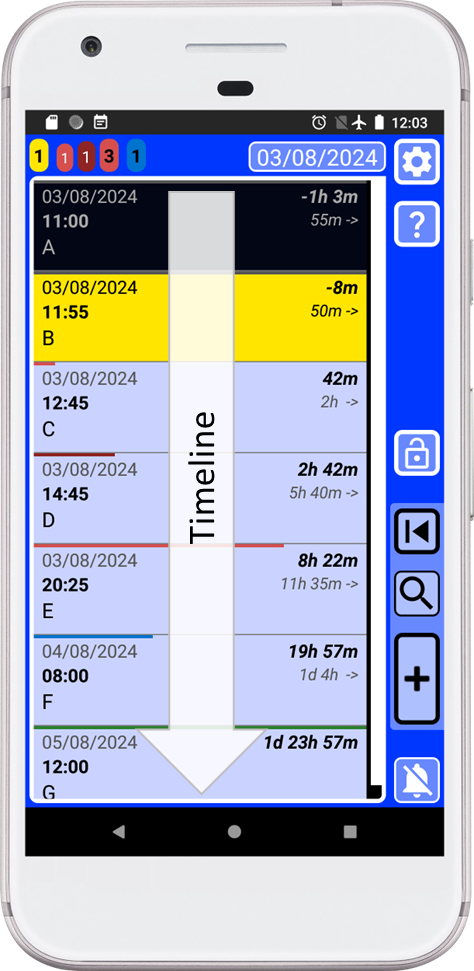

This is another optional feature designed to help you without being intrusive. For example, with SECURElogBook you can add or remove time manually or use the dedicated dialogs to do so quickly and accurately. Additionally, you can choose to pay attention to color-coded messages after creating or editing a log. These messages help confirm your actions: red indicates today, blue indicates tomorrow, black indicates the day after tomorrow, and green indicates the day after tomorrow. The app is packed with features and details to help you accomplish what you want without getting in the way. Now, if you want, you will be able to organize your information with professional precision with the Tag Library.
SECURElogBook allows you to save information (text, date and time) and stores it chronologically as records.

SECURElogBook has been designed with flexibility in mind, making it suitable for both work and personal use.
Entering information is as seamless as possible, encouraging you to record and track everything you need.
The app has a powerful search system to allow you to find what you want. We all know that it is easy to find things when you have few things. Once you have a few thousand records, it will be difficult to find the information you are looking for.
The better your memory, the more information you can process. But to make things easier, we can use a tool that will help us keep all our data under control. This new tool is called Tag Library.
This new feature will allow SECURElogBook to not only do multiple things like schedule your day using only your phone or track what you eat, how much exercise, … Now, the app will provide better control over your information. I designed SECURElogBook to handle all your information using only your phone (most phone apps need a PC program companion and Internet). Now, thanks to the Tag Library, the app is like a Ferrari for information on your hand. You can drive your Ferrari slowly, or you can win a race! It depends on what you want to do, the more you know about cars and the more you practice, the more you can achieve with it. The same applies to SECURElogBook.
Like everything in SECURElogBook, Tag Library is easy to use and handy. You can find it just by swiping on any text box. The idea is that you can store your information in a virtual container that you defined with a tag. All your information is still in the same list, but thanks to the Tag Library you can use the search system to find what you are looking for with just a few taps on the screen.
If you use tags to create important records, it will be impossible to lose them because they will be stored inside that virtual container called tag.
The Tag Library system allows you to use icons and add a definition to tags. Tags can also be added and deleted. Finally, all Tag Library information will be included within the backup information.
Now, thanks to the Tag Library system, you will have total control over your information, since instead of having the records independently, you will be able to group them adding a tag that will allow you to find them easily.
The Tag Library can be considered a quicker version of the Favourites menu. Like everything in SECURElogBook, it is optional and can be adapted to your life. The good news is that now you have an extra feature that will make things easier and better. Remember, with SECURElogBook, you are not limited—the more you know, the more you can do.
The Tag Library is accessible from any text box: creator, editor, search and Favourites editor.
1. To access the Tag Library swipe left or right inside the text box.
Once we swipe inside the text box the Tag Library will open:
Just like with the Favourites menu, I have added some examples to give you an idea of what you can do with the menu. Remember that you can delete the default tags if you wish. You can always make a backup before making changes to preserve the original information.
2. Pressing
This window will allow you to create and delete tags.
To add a new tag press the “+” button. The tag name is mandatory. The definition of your tag is optional. Like everything in SECURElogBook all is flexible so you can adapt it to your life.
I always say “The more you know the more you can do”. In this case that means that if you know how Android shows items on a list you can use that information to make things easier for you.
To summarise the order is: space, numbers, symbols, uppercase, lowercase, uppercase with accent, lowercase with accent, emojis.
Be aware that Android makes a difference between uppercase and lowercase. That means that all words that starts with uppercase will be displayed before words that start with lower case. You can use this feature to control where the items on your list will be displayed.
An easy way to move up an item on the list is adding a space in front. Emojis are last, but adding a space in front of them will move them to the top of the list.
This is the order that Android uses to sort items on a list by default:

This is a good approximation to try to sort the more than 149,000 characters present in Unicode.
Another important thing to know is that Android will sort digits comparing them from left to right:

That means that if you want to sort more than 10 items in your list it is better to use always double digits: 01, 02, 03, …